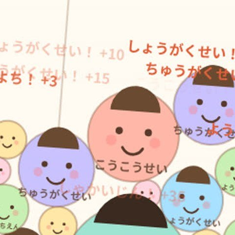
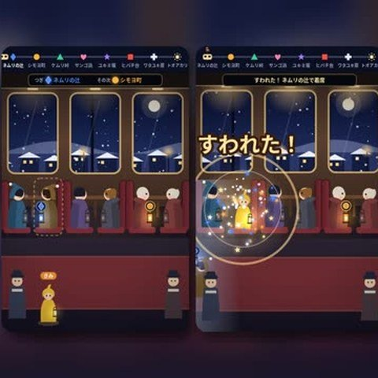
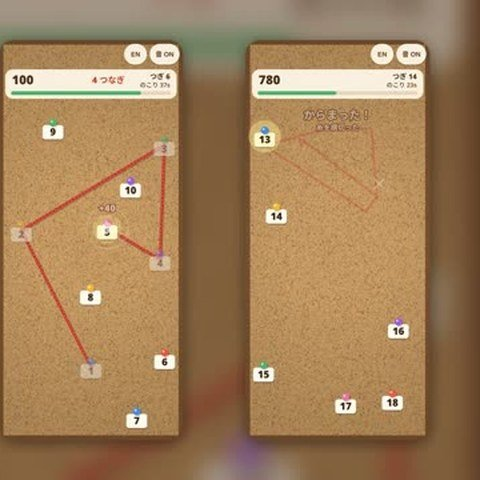
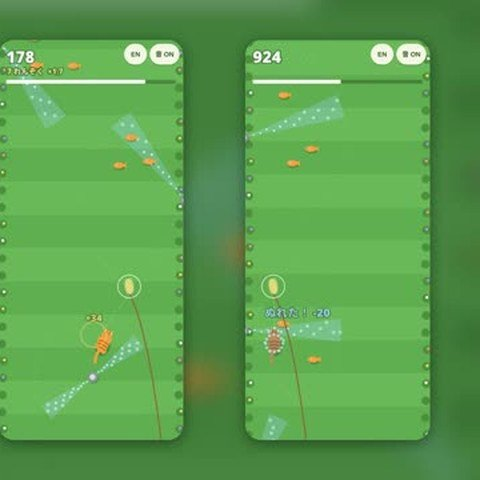
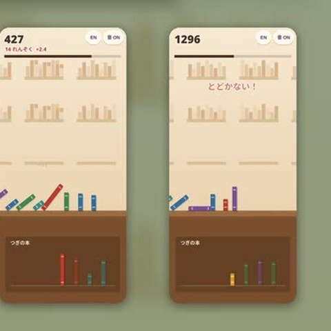

人にさわって仲間を増やし、ゾンビの群れで街をうめつくすゲーム。
同じゾンビを合体させて、大きく育てるゲーム。

ゆりかごから子どもを落として、同じ子どうしを合体させるゲーム。

夜行列車で、次に降りる人の前に立って、先に席に座るゲーム。
重さのちがう物を、同時に着地させるゲーム。
風の向きを読んで、種を飛ばして森の穴に入れるゲーム。
水のしずくに合わせてタップするゲーム。ずれたにせのしずくは押さない。

指をはなさずに、1、2、3…の順に毛糸をかけていくゲーム。

じゃらしで猫をさそいながら、庭を走り抜けるゲーム。
糸巻きを回して凧を飛ばし、光の玉をつなぐゲーム。

本をドミノのように倒して、つなげていくゲーム。